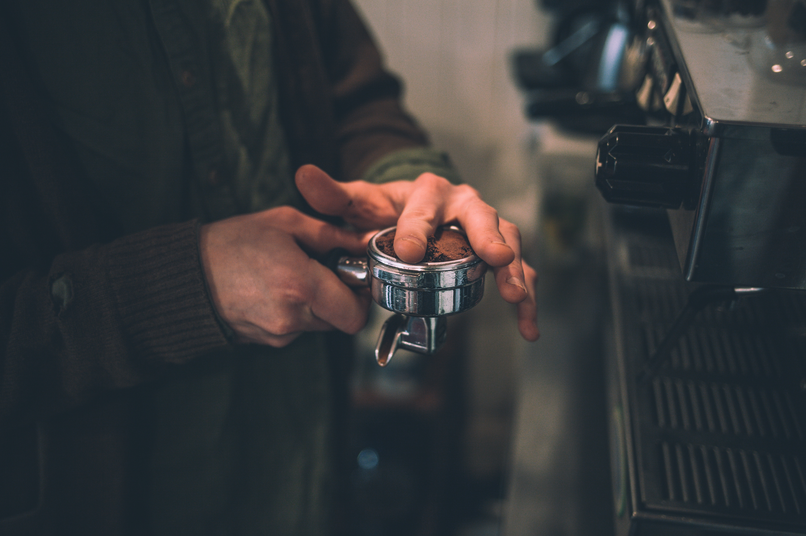
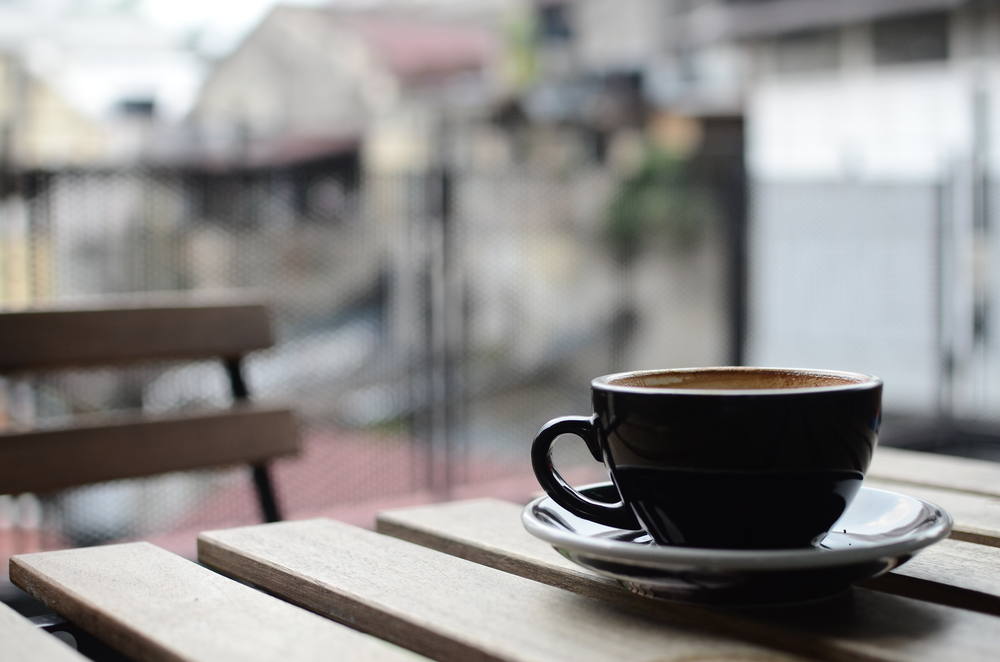

Step Two
Insert the ground coffee and portafilter into the portafilter head, twist the handle into the locked position and start the machine. Watch to make sure it pulls the espresso shot properly, ideally it is between 20 and 30 seconds

Its time to rediscover the lost art of latte creation. No more Stabucks or crappy coffee - its time to get back to the basics, the delicious latte.
Grind and tamp your beans in the portafilter
Insert the ground coffee and portafilter into the portafilter head, twist the handle into the locked position and start the machine. Watch to make sure it pulls the espresso shot properly, ideally it is between 20 and 30 seconds
While your espresso is pulling, heat the milk.

Mix the espresso and milk, one part espresso with two parts milk for a delicious and simple latte. No sweetener or flavors needed.
Smile!

| Item | Quantity |
|---|---|
| Espresso shot | Milk |